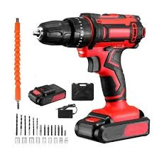
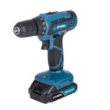
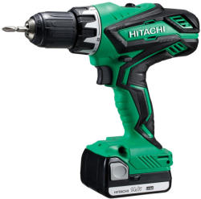
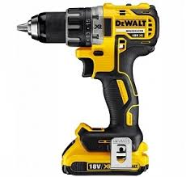

Barkácsáruházunkban mindent megtalál, ami az otthoni felújításhoz, építéshez vagy javításhoz szükséges. Válogasson festékeink, faanyagaink, szerszámaink és egyéb termékeink közül!
Festékek
| Név | Gyártó | Felhasználás | Mennyiség | Egységár |
|---|---|---|---|---|
| Albert beltéri falfesték Égkék | Hat Szivárvány nyrt. | Beltéri | 2 liter | 2 500 Ft/liter |
| Albert beltéri falfesték Acélkék | Hat Szivárvány nyrt. | Beltéri | 2 liter | 2 500 Ft/liter |
| Albert beltéri falfesték Tavasz zöld | Hat Szivárvány nyrt. | Beltéri | 2 liter | 2 500 Ft/liter |
| Albert beltéri falfesték Paradicsom | Hat Szivárvány nyrt. | Beltéri | 2 liter | 2 500 Ft/liter |
| Albert beltéri falfesték Lazac | Hat Szivárvány nyrt. | Beltéri | 2 liter | 2 500 Ft/liter |
| Albert beltéri falfesték Barna | Hat Szivárvány nyrt. | Beltéri | 2 liter | 2 500 Ft/liter |
| Albert beltéri falfesték Arany | Hat Szivárvány nyrt. | Beltéri | 2 liter | 2 500 Ft/liter |
Fúróink




-
Piros fúró
Ár: 15 000 Ft
Készlet: 1–5 db raktáron -
Kék fúró
Ár: 22 000 Ft
Készlet: csak rendelésre -
Zöld fúró
Ár: 19 000 Ft
Készlet: 1–3 db raktáron -
Sárga fúró
Ár: 25 000 Ft
Készlet: csak rendelésre
Nyitvatartás
| Hétfő | Kedd | Szerda | Csütörtök | Péntek | Szombat | Vasárnap |
|---|---|---|---|---|---|---|
| 7:30–20:30 | 8:00–20:00 | Zárva | ||||